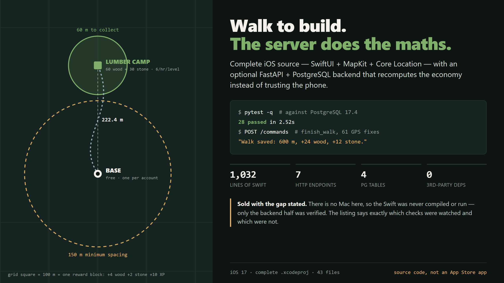

Walk in the real world to earn wood and stone, plant buildings on a MapKit
map, and come back within 60 m to collect. The phone never sends a balance — it
submits typed commands and the server recomputes the economy itself.
This page shows the half that can be demonstrated on a Windows machine: the
backend. There is no Mac here, so the SwiftUI app was never compiled, launched or
run — not once. Everything below was executed while writing this page; nothing is
reproduced from the README.
The rules, drawn to scale

The 60 m collection radius and the 150 m minimum spacing between
buildings, drawn to one metres-per-pixel scale rather than sketched — the
222.4 m separation shown is the real distance between those two points. One grid
square is 100 m, which is also one reward block: +4 wood, +2 stone, +10 XP.
Seven endpoints, and a spec that matches them
Generated from the running FastAPI app, not copied from documentation.
The docs/openapi.json that ships in the download was then compared against it
and is identical — the parsed documents, not just similar text.
Method
Path
What it does
POST
/auth/register
Create an account
POST
/auth/login
Exchange a password for a session token
POST
/auth/logout
Invalidate one device's token
GET
/state
Wallet, buildings and walk history
POST
/commands
Every state change: place, upgrade, collect, finish_walk
GET
/health
Liveness, including the database
DELETE
/account
Delete the account and everything in it
Real responses, captured while writing this
The server refuses bad input precisely, and never echoes the password
back in a validation error — a detail worth checking in anything that accepts one.
Password under 12 charactersPOST /auth/register422
{"detail":[{"loc":["body","password"],"msg":"String should have at least 12 characters","type":"string_too_short"}]}
Username with a dashPOST /auth/register422
{"detail":[{"loc":["body","username"],"msg":"String should match pattern '^[a-zA-Z0-9_]+$'","type":"string_pattern_mismatch"}]}
An extra field the client inventedPOST /auth/register422
{"detail":[{"loc":["body","admin"],"msg":"Extra inputs are not permitted","type":"extra_forbidden"}]}
/health and /state return 500 without a database,
because both touch it. Against a real PostgreSQL they return 200
{"status":"ok"} and 401 "Sign in required.". Those three validation
responses above need no database at all, which is why they are the ones shown here.
The 4 skips are the PostgreSQL tests —
they need a live database and this machine has none. During packaging they were run against
a real PostgreSQL 17.4 and reported 28 passed, covering idempotency, two
accounts' isolation, and concurrent spends being serialised. That run is reported here as
what the packaging check found, not as something reproduced on this page.
What you should know before buying
The entire iOS half is unverified. 1,032 lines of Swift, never compiled,
never launched, never tested here. That it builds in Xcode and runs in the Simulator are
the author's claims, reproduced as claims.
No field testing, ever. Nobody has walked around with this running on a
phone. The 10-step field checklist in the docs has never been executed by anyone.
An Apple Developer account is needed for a physical device — the
Simulator needs none. The bundle id is a placeholder and the team field is empty.
No app icon and no asset catalog at all.
A modified client can fabricate coordinates. The server validates speed,
accuracy, staleness and overlap, and rejects segments that fail — but there is no
device attestation. Treat it as a game, not an oracle.
The two halves use different Earth models — the app uses WGS-84
geodesic distance, the server a spherical haversine. Measured disagreement: 0.190% at
the test latitude, up to 0.561% near the equator. That is about 0.285 m at the
150 m spacing boundary.
The bundled compose file publishes port 8000 on every interface over plain
HTTP. Fine on a laptop, wrong on a VPS without a proxy in front.
psycopg is LGPL-3.0 — the only copyleft component, installed from PyPI
and unmodified.
No support, no multiplayer, no notifications, no background sync.
Get it
Trailblazer — complete iOS source + backend — $8
SwiftUI, MapKit and Core
Location, plus an optional FastAPI + PostgreSQL server. 43 files.